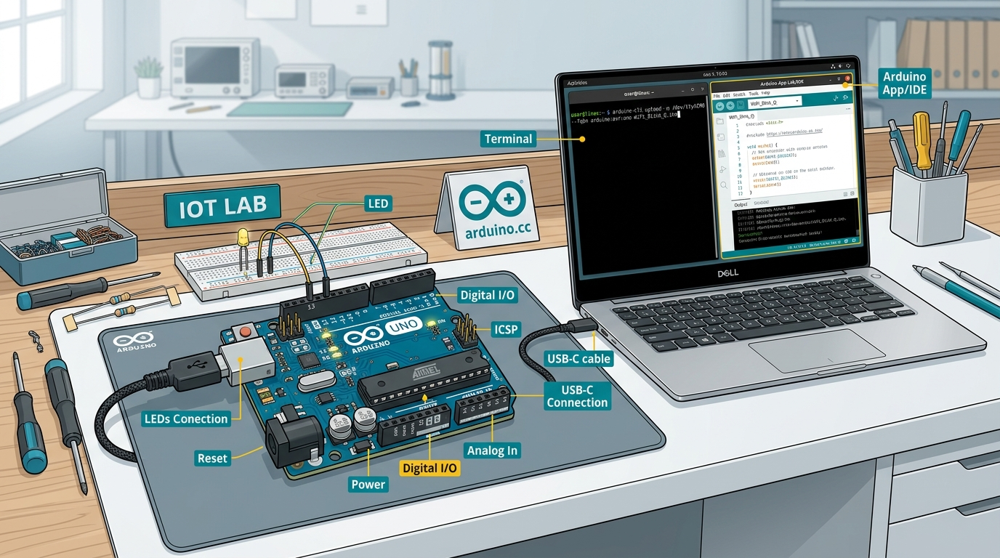

สาระสำคัญและผลการเรียนรู้ประจำบท
กรอบมาตรฐานการเรียนรู้ตามหลักสูตรแกนกลางการศึกษาขั้นพื้นฐาน และสมรรถนะสำคัญของผู้เรียน
ปัญญาประดิษฐ์บนระบบสมองกลฝังตัว (Embedded Artificial Intelligence: Edge AI) คือ การนำโมเดลการเรียนรู้ของเครื่อง (Machine Learning) และการเรียนรู้เชิงลึก (Deep Learning) ที่ผ่านการฝึกสอนแล้ว มาประมวลผลบนชิปของอุปกรณ์ปลายทางโดยตรง ผ่านสถาปัตยกรรมประมวลผลร่วม (Heterogeneous Computing) ของบอร์ดพัฒนา Arduino UNO Q ซึ่งผสานการทำงานระหว่างหน่วยประมวลผลหลัก Qualcomm Dragonwing QRB2210 และไมโครคอนโทรลเลอร์ ARM Cortex-M4 ช่วยลดความหน่วงในการประมวลผลและตอบสนองได้ทันที (Real-Time / Low Latency) ประหยัดปริมาณการรับส่งข้อมูลผ่านเครือข่าย (Bandwidth) และรักษาความปลอดภัยของข้อมูลส่วนบุคคลได้อย่างมีประสิทธิภาพ
ผลการเรียนรู้ที่คาดหวังตามกรอบสมรรถนะ (Learning Outcomes)
ผู้เรียนสามารถอธิบายสถาปัตยกรรมหน่วยประมวลผลของบอร์ด ความแตกต่างระหว่าง Cloud AI กับ Edge AI ตลอดจนโครงสร้างของไฟล์โมเดลไบนารี .eim ได้อย่างถูกต้องตามหลักวิชาการ
ผู้เรียนสามารถดาวน์โหลด ติดตั้ง และตั้งค่าโปรแกรมสภาพแวดล้อมสำหรับการพัฒนา Arduino App Lab พร้อมติดตั้งไดรเวอร์ (Driver) เพื่อเชื่อมต่อคอมพิวเตอร์กับบอร์ดได้อย่างถูกต้องตามขั้นตอน
ผู้เรียนสามารถใช้คำสั่งเทอร์มินัล (Terminal) ในการตรวจสอบระบบปฏิบัติการ Debian Linux AArch64 และตั้งค่าการสื่อสารผ่านเครือข่ายแบบ Network Mode ได้อย่างถูกต้อง
ผู้เรียนมีความละเอียดรอบคอบในการตรวจสอบอุปกรณ์ตามมาตรฐานความปลอดภัยทางอิเล็กทรอนิกส์ มีความรับผิดชอบในการปฏิบัติงานร่วมกัน และมีทักษะในการแก้ปัญหาทางเทคนิคอย่างเป็นระบบ
การติดตั้งและตั้งค่าโปรแกรมสภาพแวดล้อม Arduino App Lab
โปรแกรม Arduino App Lab คือ โปรแกรมสภาพแวดล้อมสำหรับการพัฒนา (IDE: Integrated Development Environment) ที่ออกแบบมาเพื่อบอร์ดในตระกูล Q-Series โดยเฉพาะ โดยพัฒนาต่อยอดจาก Arduino IDE รุ่นดั้งเดิม ให้มุ่งเน้นการเขียนโปรแกรมด้วย ภาษาไพทอน (Python 3) บนระบบปฏิบัติการลีนุกซ์ พร้อมระบบควบคุมฮาร์ดแวร์และโมเดลปัญญาประดิษฐ์ในรูปแบบบล็อกคำสั่ง (Modular Brick Architecture) ที่ใช้งานง่ายและเป็นระบบ

ความต้องการของระบบคอมพิวเตอร์สำหรับการปฏิบัติการ (System Requirements)
| ทรัพยากรระบบ | เกณฑ์ขั้นต่ำที่รองรับ (Minimum Requirement) | เกณฑ์มาตรฐานที่แนะนำ (Recommended Specification) |
|---|---|---|
| ระบบปฏิบัติการ | Windows 10 (64-bit) / macOS 11+ / Ubuntu 20.04+ | Windows 11 (64-bit) / macOS Sonoma 14+ |
| หน่วยประมวลผลกลาง (CPU) | Intel Core i3 หรือ AMD Ryzen 3 ขึ้นไป | Intel Core i5 รุ่นที่ 11 ขึ้นไป หรือ Apple Silicon M1/M2/M3 |
| หน่วยความจำหลัก (RAM) | 8 GB DDR4 | 16 GB DDR4/DDR5 (สำหรับการประมวลผลกราฟิกและฝึกสอนโมเดล) |
| ช่องเชื่อมต่ออุปกรณ์ภายนอก | พอร์ต USB 2.0 (รองรับกระแสไฟฟ้า 5V 1.5A) | พอร์ต USB Type-C มาตรฐาน 3.2 Gen 2 (จ่ายกระแสไฟฟ้า 5V 3.0A Data) |
ลำดับขั้นตอนการติดตั้งโปรแกรม (Step-by-Step Installation)
เข้าสู่เว็บไซต์ทางการของผู้พัฒนา Arduino หรือลิงก์ที่ผู้สอนจัดเตรียมไว้ เพื่อดาวน์โหลดโปรแกรมติดตั้งรุ่นล่าสุดที่ตรงกับระบบปฏิบัติการของคอมพิวเตอร์ (เช่น ไฟล์ ArduinoAppLab-Setup.exe สำหรับ Windows)
ระหว่างการติดตั้ง ตัวติดตั้งจะขออนุญาตลงทะเบียน Qualcomm USB Driver และ Virtual Network Interface ให้นักเรียนคลิกปุ่ม "Install" เพื่อให้คอมพิวเตอร์สามารถตรวจจับและสื่อสารกับบอร์ด Arduino UNO Q ผ่านพอร์ต USB-C ได้อย่างสมบูรณ์
เมื่อเปิดใช้งานโปรแกรมครั้งแรก ระบบรักษาความปลอดภัยของ Windows จะแสดงหน้าต่างแจ้งเตือน ให้เลือกทำเครื่องหมายในช่อง "Private networks" แล้วคลิกปุ่ม "Allow access" เพื่อเปิดช่องทางสำหรับโพรโทคอล mDNS (พอร์ต 5353) ให้คอมพิวเตอร์และบอร์ดค้นหากันในเครือข่ายได้
สายชาร์จโทรศัพท์ทั่วไปอาจมีเฉพาะสายนำกระแสไฟฟ้า (VBUS/GND) แต่ไม่มีสายรับส่งสัญญาณข้อมูล (Data Lines: D+/D- หรือ TX/RX) หากนำมาเชื่อมต่อ บอร์ดจะมีไฟติดสว่างแต่คอมพิวเตอร์จะมองไม่เห็นบอร์ด ผู้เรียนต้องเลือกใช้สาย USB Type-C ชนิดรับส่งข้อมูล (Data Cable) ที่รองรับการจ่ายกระแสไฟฟ้าไม่ต่ำกว่า 3 แอมแปร์ (3A) เท่านั้น
สถาปัตยกรรมระบบและการตรวจสอบระบบปฏิบัติการ Debian Linux AArch64 บนบอร์ดพัฒนา
บอร์ดพัฒนา Arduino UNO Q ออกแบบโดยใช้สถาปัตยกรรมแบบประมวลผลสองระบบร่วมกัน (Heterogeneous Dual-Core Architecture) ซึ่งประกอบด้วยหน่วยประมวลผล 2 ส่วนหลักที่ทำงานประสานกันผ่านระบบบัสความเร็วสูง:
หน่วยประมวลผลกลาง 4 คอร์ (Quad-Core) ARM Cortex-A53 ความกว้าง 64 บิต สถาปัตยกรรม AArch64 ทำงานบนระบบปฏิบัติการลีนุกซ์ Debian 12 (Bookworm) มีหน้าที่ประมวลผลโค้ดภาษาไพทอน ประมวลผลภาพ เสียง และรันโมเดลปัญญาประดิษฐ์ไฟล์ .eim
หน่วยประมวลผลควบคุมแบบเวลาจริง (Real-Time Control) ทำหน้าที่ควบคุมขาสัญญาณดิจิทัล (GPIO) ขาแอนะล็อก (ADC) สัญญาณพัลส์ (PWM) และควบคุมแผงไฟ LED Matrix โดยสื่อสารแลกเปลี่ยนข้อมูลกับหน่วยประมวลผลหลักผ่านระบบบัสความเร็วสูงบนบอร์ด
ลำดับขั้นตอนการสังเกตไฟแสดงสถานะขณะเปิดเครื่อง (Boot Sequence)
การตรวจสอบระบบผ่านคำสั่งเทอร์มินัล (Linux Commands)
User: arduino@arduino-uno-qcheck_env.py
Python 3.10+
import os, platform, sys
print("========================================")
print(" ตรวจสอบความพร้อมของระบบและบอร์ดพัฒนา Arduino UNO Q")
print("========================================")
print(f"OS Platform : {platform.system()} {platform.release()}")
print(f"Architecture : {platform.machine()}")
print(f"Python Version : {sys.version.split()[0]}")
print(f"Working Dir : {os.getcwd()}")
print("สถานะ: พร้อมรองรับการประมวลผล Edge AI (.eim)")
print("========================================")
การเชื่อมต่อและการตั้งค่าโหมดเครือข่าย (Network Mode)
ในการนำระบบปัญญาประดิษฐ์บนอุปกรณ์ปลายทาง (Edge AI) ไปใช้งานจริง เช่น ติดตั้งบนหุ่นยนต์ แขนกล หรือสายพานลำเลียง เราไม่สามารถต่อสาย USB เข้ากับคอมพิวเตอร์ตลอดเวลาได้ บอร์ดพัฒนา Arduino UNO Q จึงออกแบบมาให้รองรับการทำงานในโหมดเครือข่าย (Network Mode) ทำให้นักเรียนสามารถส่งโค้ดโปรแกรม ดูภาพสดจากกล้องแบบเรียลไทม์ และเรียกดูผลการทำนายผลลัพธ์ผ่านระบบเครือข่ายไร้สาย (Wi-Fi) หรือสาย LAN ได้อย่างสะดวกและคล่องตัว
- เชื่อมต่อผ่านสาย USB Type-C เข้ากับพอร์ตคอมพิวเตอร์โดยตรง
- เหมาะสำหรับการตั้งค่าเริ่มต้นบอร์ดในครั้งแรก (First-time initialization)
- เหมาะสำหรับการกู้คืนระบบหรือติดตั้งระบบปฏิบัติการใหม่
- มีข้อจำกัดเรื่องระยะการทำงานตามความยาวของสาย USB
- เชื่อมต่อผ่านสัญญาณ Wi-Fi (รองรับทั้งย่านความถี่ 2.4 GHz และ 5.0 GHz)
- สามารถเข้าถึงและควบคุมบอร์ดจากคอมพิวเตอร์เครื่องใดก็ได้ในเครือข่ายเดียวกัน
- รองรับการดูภาพสดจากกล้องผ่านพอร์ต 7000 แบบไร้สาย
- มีความคล่องตัวสูง เหมาะกับการติดตั้งบนหุ่นยนต์หรือเครื่องจักรอัตโนมัติ
ลำดับขั้นตอนการตั้งค่าบอร์ดเพื่อเชื่อมต่อเครือข่าย
arduino-uno-q.local ทำให้นักเรียนเรียกใช้งานได้ทันทีโดยไม่ต้องจดจำหมายเลข IP Address
ping arduino-uno-q.local หากขึ้นข้อความตอบกลับ Reply from... แสดงว่าการเชื่อมต่อเครือข่ายเสร็จสมบูรณ์
หลักการปัญญาประดิษฐ์บนอุปกรณ์ปลายทาง และการใช้งานแพลตฟอร์ม Edge Impulse
ในอดีต การประมวลผลปัญญาประดิษฐ์ต้องส่งข้อมูลภาพหรือสัญญาณจากเซนเซอร์ผ่านเครือข่ายอินเทอร์เน็ตขึ้นไปประมวลผลบนเซิร์ฟเวอร์คลาวด์ขนาดใหญ่ (Cloud AI) ซึ่งทำให้มีความหน่วงในการส่งข้อมูล และอาจมีความเสี่ยงเรื่องความปลอดภัยของข้อมูล แต่ด้วยเทคโนโลยีปัญญาประดิษฐ์บนอุปกรณ์ปลายทาง (Edge AI) นักเรียนสามารถนำโมเดลการเรียนรู้เชิงลึกที่ผ่านการย่อขนาดและปรับให้เหมาะสมแล้ว มาประมวลผลบนชิปของบอร์ดสมองกลฝังตัว เช่น Qualcomm Dragonwing QRB2210 ได้โดยตรง
| คุณลักษณะ (Performance Attributes) | Cloud AI (การประมวลผลบนคลาวด์) | Edge AI (การประมวลผลบนบอร์ดปลายทาง) |
|---|---|---|
| ความเร็วในการตอบสนองและความหน่วง (Latency) | มีความหน่วงสูง (200 - 2,000 มิลลิวินาที ขึ้นอยู่กับความเร็วอินเทอร์เน็ต) | ความหน่วงต่ำมาก ตอบสนองทันที (10 - 50 มิลลิวินาที แบบเรียลไทม์) |
| การพึ่งพาสัญญาณอินเทอร์เน็ต | ต้องเชื่อมต่ออินเทอร์เน็ตตลอดเวลา (ระบบหยุดทำงานทันทีหากเน็ตหลุด) | ทำงานแบบออฟไลน์ได้ 100% (ทำงานได้ต่อเนื่องแม้ไม่มีอินเทอร์เน็ต) |
| ความปลอดภัยและความเป็นส่วนตัวของข้อมูล | มีความเสี่ยงจากการส่งภาพหรือข้อมูลออกสู่เครือข่ายภายนอก | ปลอดภัยสูงสุด ข้อมูลภาพและเซนเซอร์ถูกประมวลผลอยู่ภายในบอร์ด |
| การใช้ปริมาณข้อมูลเครือข่าย (Bandwidth) | สิ้นเปลืองแบนด์วิดท์ เพราะต้องส่งไฟล์ภาพหรือวิดีโอสดขึ้นคลาวด์ตลอดเวลา | ประหยัดแบนด์วิดท์ ส่งเฉพาะผลลัพธ์หรือสัญญาณแจ้งเตือนเมื่อพบเหตุการณ์ |
วงจรกระบวนการพัฒนาโมเดล 5 ขั้นตอนบน Edge Impulse
ไฟล์นามสกุล .eim (Edge Impulse Model) คือ ไฟล์โมเดลปัญญาประดิษฐ์ระดับระบบ (Native Machine Code) ที่คอมไพล์ด้วยภาษา C++ เพื่อให้ทำงานบนระบบปฏิบัติการลีนุกซ์ 64 บิต (Linux AArch64) โดยเฉพาะ ภายในไฟล์ประกอบด้วยขั้นตอนการประมวลผลสัญญาณดิจิทัล (DSP) และโครงข่ายประสาทเทียมที่ปรับแต่งมาอย่างสมบูรณ์ ทำให้บอร์ดสามารถประมวลผลได้อย่างรวดเร็วและใช้หน่วยความจำน้อย โดยไม่ต้องติดตั้งไลบรารีขนาดใหญ่เพิ่มเติม
การประเมินสมรรถนะการปฏิบัติการ (Performance Assessment Checklist)
รายการเกณฑ์การตรวจสอบสมรรถนะที่ผู้เรียนต้องผ่านการประเมินผลในบทเรียนที่ 1
คำถามทบทวนองค์ความรู้ท้ายบทเรียน (Academic Review Questions)
แบบฝึกหัดสำหรับประเมินตนเองและทบทวนเนื้อหาสำคัญเพื่อเตรียมความพร้อมสู่การปฏิบัติการขั้นสูง
.eim ได้ แตกต่างจากบอร์ด Arduino รุ่นก่อนอย่างไร?
คลิกเพื่อดูแนวคำตอบ
.eim) ได้
คลิกเพื่อดูแนวคำตอบ
คลิกเพื่อดูแนวคำตอบ
การเตรียมความพร้อมสู่บทเรียนถัดไป
บทเรียนที่ 2: สถาปัตยกรรมซอฟต์แวร์แบบมอดูล (Modular Brick) และการควบคุมฮาร์ดแวร์พื้นฐาน